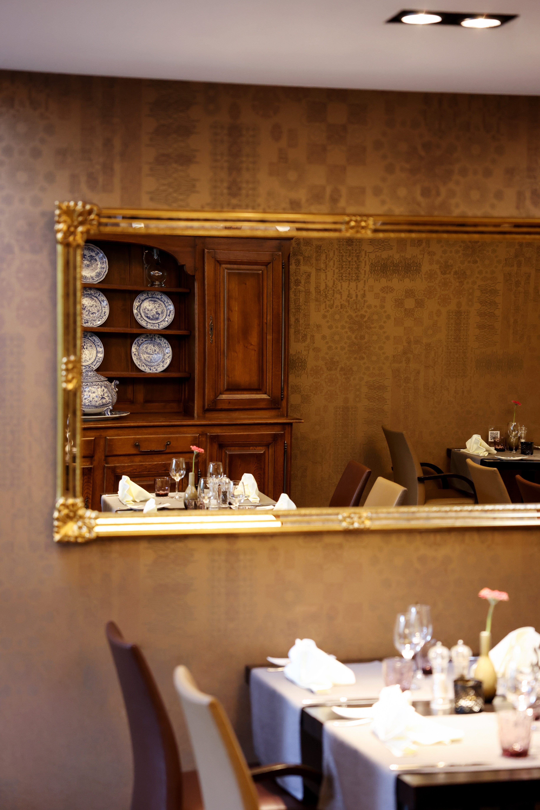

Un nid de bien-vivre à Mondorf
« Le Nid Gourmand » — deux silhouettes lovées comme dans un nid : l'emblème même de l'accueil que l'on vous réserve.
Au rez-de-chaussée de l'Hôtel Beau-Séjour, la salle à manger est l'une des tables les plus raffinées de Mondorf-les-Bains. Nappes blanches et serviettes en tissu, miroirs à cadre doré, cheminée et boiseries chaleureuses, un dressoir ancien garni de porcelaine bleu et blanc — et, veillant sur la salle, un grand vitrail du terroir.
La cuisine y est française, de terroir, créative et généreuse : un menu du jour et un menu du marché qui suivent les saisons, des suggestions et une carte fidèle aux classiques. Une adresse pensée pour les repas qui comptent — en couple, en famille, ou entre deux escapades au Domaine Thermal.
En cuisine : le chef Jan Van Dijken, dont le Châteaubriand est la signature de la maison. (nom & orthographe à confirmer avec l'établissement.)
